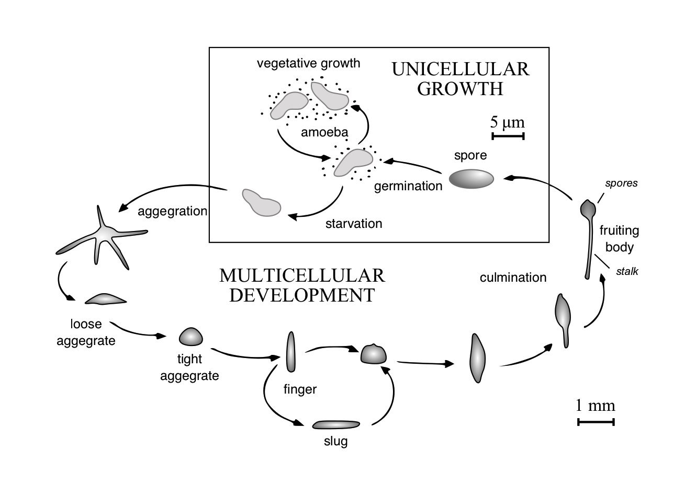
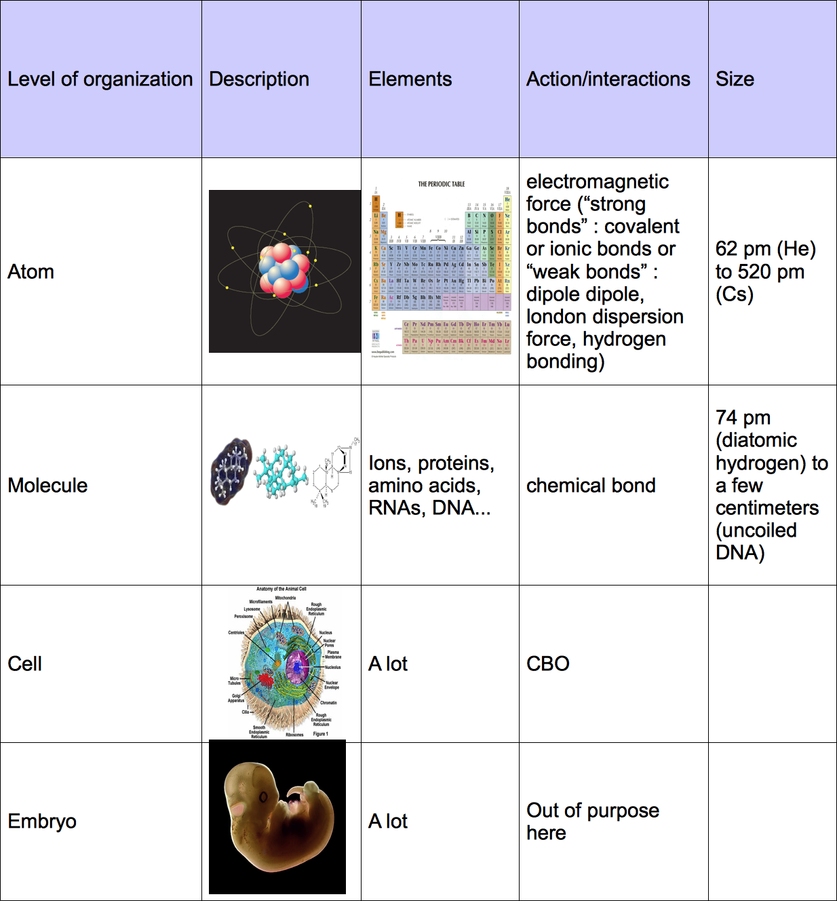

2. Developmental embryo modeling State of the Art and Principles
2.1. Theoretical biology models of development
Even if some of the authors cited in the previous section were involved in theoretical research (for example Waddington, Needham and others founded the "Theoretical Biology Club" in 1930), most of the production was provided by "classical" biologists. In the following sections, we will present a state of the art of the theoretical studies in developmental biology.
History
Nicolas Rashevsky, among the fathers of theoretical biology.
He aims at formalizing biology with mathematics. Call its discipline "Mathematical Biophysics". (Rashevsky, N., 1938. Mathematical Biophysics ).
He made the first attempt to describe quantitatively biological phenomena.
He insists on maintaining proximity between theoreticians and experimentalists.
Some said that he produced "neither good mathematics nor good biology nor good physics". (from Cull, P., 2007. The mathematical biophysics of Nicolas Rashevsky. Biosystems, 88(3), pp.178–184. )... interesting since the beginning of quantitative biology, this critisism plagues the interdisciplinarity...
on development: he proposes a framework to describe organisms as graph with vertices representing biological functions and oriented edges relating the interactions between them. Rashevsky, N., 1954. Topology and life: in search of general mathematical principles in biology and sociology. Bulletin of Mathematical Biology, 16(4), pp.317–348.
also: Rashevsky, N., 1940. An approach to the mathematical biophysics of biological self-regulation and of cell polarity. Bulletin of Mathematical Biology, 2(1), pp.15–25. : cell polarity is possible even if the cell has a spherical shape.
Look for the first major developmental model involving mechanics:
-> the equations of continuum mechanics
cells as interacting members of a deformable medium
different from Odell et al. who uses discrete cells.
Waddington's epigenetic landscape 1940??? : belong to the kind of "allegories, i.e., mechanical analogies which appear almost impervious to experimental disproof" .
Jacobson, A.G. & Gordon, R., 1976. Changes in the shape of the developing vertebrate nervous system analyzed experimentally, mathematically and by computer simulation. Journal of Experimental Zoology, 197(2), pp.191–246. : mathematical model of "the formation of the neural plate based on different autonomous, preprogrammed schedules of shape changes for different regions of the neural ectoderm."
Reaction-diffusion
Turing, A.M., 1952. The chemical basis of morphogenesis. Philosophical transactions of the Royal Society of London Series B, Biological sciences, 237(641), pp.37–72.
: coupling diffusion of chemical signals (the morphogens) between cells and local chemical reactions involving these agents within the cells is sufficient to generate complex spatial patterns.
Gierer, A. amp;einhardt, H., 1972. A theory of biological pattern formation. Biological Cybernetics, 12(1), pp.30–39. and later Meinhardt, H. amp;ierer, A., 1974. Applications of a theory of biological pattern formation based on lateral inhibition. Journal of Cell Science, 15(2), pp.321–346. were able to reproduce various morphogenetic patterns by adding the concept of activation and inhibition interaction between morphogens.
Young, D.A., 1984. A local activator-inhibitor model of vertebrate skin patterns. Mathematical Biosciences, 72(1), pp.51–58. : pas encore le pdf, essayer sur proxy isc ou envoi René
PCP signalling, Amonlirdviman, K. et al., 2005. Mathematical modeling of planar cell polarity to understand domineering nonautonomy. Science : a reaction-diffusion model to establish that the Drosophila melanogaster epithelium is polarized with the PCP pathway in a non-autonomous manner.
excellent review: Kondo, S. amp;iura, T., 2010. Reaction-diffusion model as a framework for understanding biological pattern formation. Science, 329(5999), pp.1616–1620.
regarder chapitre dans "Camazine, S., Deneubourg, J.-L., Franks, N. R., Sneyd, J., Theraulaz, G. and Bonabeau, E. (2003) Self-Organization in Biological Systems. Princeton University Press". bureau René
regarder chapitre dans JD Murray
Morphogens gradient formation and function
Wolpert, L., 1969. Positional information and the spatial pattern of cellular differentiation. Journal of Theoretical Biology, 25(1), p.1.
introduces the theory of "positional information".
chercher Enrico Coen "The Art of Genes" (notion: local geography of the embryo) bibiotheque rené
review de wolpert Wolpert, L., 1996. One hundred years of positional information. Trends in genetics : TIG, 12(9), pp.359–364.
Shape, dynamics, precision of the morphogen gradient
pour intro: Lawrence, P.A., 2001. Morphogens: how big is the big picture? Nature Cell Biology, 3(7), pp.E151–4.
pas theorique mais clair pour intro: Tabata, T. amp;akei, Y., 2004. Morphogens, their identification and regulation. Development, 131(4), pp.703–712.
Kicheva, A. et al., 2012. Investigating the principles of morphogen gradient formation: from tissues to cells. Current opinion in genetics amp;evelopment, pp.1–6.
Ben-Zvi, D., Shilo, B.-Z. amp;arkai, N., 2011. Scaling of morphogen gradients. Current opinion in genetics amp;evelopment, 21(6), pp.704–710.
Barkai, N. amp;hilo, B.-Z., 2009. Robust Generation and Decoding of Morphogen Gradients. Cold Spring Harbor Perspectives in Biology, 1(5), pp.a001990–a001990.
local interpretation of the gradient, before or after steady state in Saunders, T. amp;oward, M., 2009. When it pays to rush: interpreting morphogen gradients prior to steady-state. Physical Biology, 6(4), p.046020.
the big question of how the gradient is established: simply by diffusing from a source, or by more elaborate mechanism: Lander, A.D., Nie, Q. amp;an, F.Y.M., 2002. Do morphogen gradients arise by diffusion? Developmental cell, 2(6), pp.785–796.
Gregor, T. et al., 2005. Diffusion and scaling during early embryonic pattern formation. Proceedings of the National Academy of Sciences of the United States of America, 102(51), pp.18403–18407.
Rolland-Lagan, A. et al., 2012. Morphogen-based simulation model of ray growth and joint patterning during fin development and regeneration. Development, 139, pp.1–10.
Gradient and polarity: many examples... look for it
Eaton, S. amp;ülicher, F., 2011. Cell flow and tissue polarity patterns. Current opinion in genetics amp;evelopment, 21(6), pp.747–752.
...
Epithelial cell shape and their division pattern.
Gibson MC, Patel AB, Nagpal R, Perrimon N (2006) The emergence of geometric order in proliferating metazoan epithelia. Nature 442: 1038–1041. used a Markov chain model to explain the evolution of the distribution of cell shape in a Drosophila epithelium. The authors propose that cell proliferation, and not cell packing, is responsible for the shaping of cells in monolayered epithelia. The model is compared with various organisms data. (for , an example of a "top-down" model: no parameters are needed.)
Farhadifar R, Ro ̈per JC, Aigouy B, Eaton S, Julicher F (2007) The influence of cell mechanics, cell-cell interactions, and proliferation on epithelia packing. CurrBiol 17: 2095–2104. . defends that physical forces, in addition to cell division, are required to explain epithelial cell shape in the wing disc of Drosophila. A vertex based model is used where each vertex represents the junction. Forces are derived from an energy function which takes into account cell elasticity, cortical tension and inter cell adhesion. The model is tested with laser ablation experimental data.
Patel AB, Gibson WT, Gibson MC, Nagpal R (2009) Modeling and inferring cleavage patterns in proliferating epithelia. PLoS Comp Biol 5: e1000412. . investigates two factors in cell proliferation : the heritage of the cleavage plane orientation between mother and daugthter cells, and symmetry of the division. It concludes that strong symmetry is the dominant factor explaining the distribution of shapes observed experimentally.
Sahlin P, Jonsson H (2010) A modeling study on how cell division affects properties of epithelial tissues under isotropic growth. PLoS ONE 5: e11750. . study the division pattern in the shoot apical meristem epithelium of Arabidopsis. The particularity of this tissue is that an isotropic tension stretches it. The results are similar to the previous ones: symmetric division favors the simalution of observed cell shape distribution. This model used vertex based cell junction and growth rate and division of the cell is control by its local mechanical stretching.
Sandersius, S. et al., 2011. Correlating Cell Behavior with Tissue Topology in Embryonic Epithelia. PLoS ONE, 6(4), p.e18081. . Study epithelium pattern before and during the primitive streak formation in chick embyro. 1. They deny the relevancy of non-spatial markov model to explain the histogram of neighbor number in proliferating only epithelium (as Gibson 2006 does). Argument that any attempt to improve biological plausibility of this model (3 sided cells, asynchronous division) induces a deviation from the "universal" histogram. "We conclude from these results that attempts to improve the non-spatial model by adding biological realism are futile, and that the excellent agreement of the GPNP model with experimental data appears to be serendipitous"(!!!). 2. They show that their geometrical epithelium model (with ScEM) predict the histogram with the only sensible parameter being growth rate. 3. However, a surprising result is that they observe that their non-spatial markov model fits histogram from proliferation epithelium with cell motility (broader histogram).
Escudero, L.M. et al., 2011. Epithelial organisation revealed by a network of cellular contacts. Nature communications, 2, p.526. . introduces complex network topological measure in addition to the aformentionned article's geometrical measures. The new measures allow to discriminate the epithelia belonging to different species or different stage of development or between genetic variants of the same species. The observed data are classified with statistical methods, allowing to reveal the "signature" of an epithelium. (intersting for the measure tools but no explanatory value.)
Gibson, W.T. et al., 2011. Control of the mitotic cleavage plane by local epithelial topology. Cell, 144(3), pp.427–438. : study the interplay between the cell shape and the cleavage-plane orientation
Cell sorting, Differential Adhesion Hypothesis
DAH, steinberg papers:
Steinberg, M.S., 1962c. On the mechanism of tissue reconstruction by dissociated cells. I. Population kinetics, differential adhesiveness. and the absence of directed migration. Proceedings of the National Academy of Sciences of the United States of America, 48, pp.1577–1582.
Steinberg, M.S., 1962a. Mechanism of tissue reconstruction by dissociated cells. II. Time-course of events. Science, 137(3532), pp.762–763.
Steinberg, M.S., 1962b. ON THE MECHANISM OF TISSUE RECONSTRUCTION BY DISSOCIATED CELLS, III. FREE ENERGY RELATIONS AND THE REORGANIZATION OF FUSED, HETERONOMIC TISSUE FRAGMENTS. Proceedings of the National Academy of Sciences of the United States of America, 48(10), pp.1769–1776.
Steinberg, M.S., 1963. Reconstruction of tissues by dissociated cells. Some morphogenetic tissue movements and the sorting out of embryonic cells may have a common explanation. Science, 141(3579), pp.401–408.
: the observation of the behavior of once dissociated and then mixed together embryonic cells resemble the one of mixed immiscible fluids. Different phase tends to cluster together to finally form two clusters, one often engulfing the other. Similarly to these fluids, Steinberg hypothesized that the cells should also minimize their surface area and this process is modulated by differences in cell-cell adhesion.
Steinberg, M.S., 1970. Does differential adhesion govern self-assembly processes in histogenesis? Equilibrium configurations and the emergence of a hierarchy among populations of embryonic cells. Journal of Experimental Zoology, 173(4), pp.395–433.
Foty, R. & Steinberg, M., 2005. The differential adhesion hypothesis: a direct evaluation. Developmental Biology, 278(1), pp.255–263. : the surface tension of an aggregate is proportional to the cadherin expression level.
other papers:
Graner, F. amp;lazier, J., 1992. Simulation of biological cell sorting using a two-dimensional extended Potts model. Physical Review Letters, 69(13), pp.2013–2016.
Glazier JA, Graner F (1993) Simulation of the differential adhesion driven rearrangement of biological cells. Phys Rev E 47: 2128–2154.
Beysens DA, Forgacs G, Glazier JA (2000) Cell sorting is analogous to phase ordering in fluids. Proc Nat Ac Sc USA 97: 9467–9471.
Brodland, G.W. & Chen, H.H., 2000. The mechanics of heterotypic cell aggregates: insights from computer simulations. Journal of biomechanical engineering, 122(4), pp.402–407. : confront the surface tension mechanism with their finite element cell model.
Landsberg, K.P. et al., 2009. Increased Cell Bond Tension Governs Cell Sorting at the Drosophila Anteroposterior Compartment Boundary. Current biology : CB, 19(22), pp.1950–1955. or more recently Aliee, M. et al., 2012. Physical Mechanisms Shaping the Drosophila Dorsoventral Compartment Boundary. Current biology : CB, pp.1–10.
Beatrici, C.P. & Brunnet, L.G., 2011. Cell sorting based on motility differences. PHYSICAL REVIEW E, pp.1–5.
Zhang, Y. et al., 2011. Computer Simulations of Cell Sorting Due to Differential Adhesion. PLoS ONE, 6(10), p.e24999.
Beatrici, C.P. & Brunnet, L.G., 2011. Cell sorting based on motility differences. PHYSICAL REVIEW E, 84(3 Pt 1), p.031927.
Maître, J.-L. et al., 2012. Adhesion Functions in Cell Sorting by Mechanically Coupling the Cortices of Adhering Cells. Science.
reformuler le texte suivant from Mechanical control at cell–cell contacts
Cell adhesion and cortex tension are known to regulate cell–cell contact formation. Heisenberg, Paluch and colleagues now analyse the contributions of cell adhesion and cortex tension in contact formation and sorting of zebrafish progenitor cells (Science http://doi.org/jcp; 2012).
Building on previously published models of cell–cell adhesion and sorting, the authors developed a theoretical description of the shape of two progenitor cells adhering to each other. They then used dual micropipette aspiration assays to separate adhering progenitor cells from zebrafish embryos ex vivo and determined that cortex tension controls interfacial tension at the cell–cell contact, and thereby regulates cell–cell contact expansion. In contrast, cell adhesion was not involved in determining cell–cell contact size. Instead, the authors demonstrated that following mechanical separation of adhering cells, the linkage of cadherin to the actin cytoskeleton was crucial in limiting the mechanical resistance of adhesive bonds to pulling forces. The cytoskeletal anchoring of cadherins was further shown to be important for correct progenitor cell sorting within cell aggregates in vitro, and also during the segregation of progenitor cells in gastrulating zebrafish embryos in vivo. Thus, by combining theoretical, biophysical and live imaging experiments, the authors showed that cell adhesion is necessary to mechanically couple the cortices of adhering cells to support cell sorting.
cite recent papers with interfacial tension, cortical tension to modulate ...
Individual/Collective Cell migration
Kabla, A.J., 2012. Collective cell migration: leadership, invasion and segregation. Journal of the Royal Society, Interface / the Royal Society, 9(77), pp.3268–3278.
Harrison, N.C., Diez Del Corral, R. & Vasiev, B., 2011. Coordination of Cell Differentiation and Migration in Mathematical Models of Caudal Embryonic Axis Extension. PLoS ONE, 6(7), p.e22700.
Somitogenesis
Intro: from Oates, A.C., Morelli, L.G. & Ares, S., 2012. Patterning embryos with oscillations: structure, function and dynamics of the vertebrate segmentation clock. Development, 139(4), pp.625–639. : The discovery of the segmentation clock, an oscillating genetic network in the pre-somitic mesoderm (PSM), leading the formation of somites in the elongating body axis of vertebrate embryo is the source of an active field of theoretical modeling. The phenomenon is conserved in various species and it illustrates the interplay of inner cell regulation and cell-cell communication. Cooke and Zeeman introduced a general mechanism called the "clock and wavefront" mechanism which has intensively been studied since its introduction in 1976 . Lacking molecular grounding, it predicts the number and size of the somites from the period of the clock and the velocity of a wave travelling from the anterior to the posterior part of the axis, locking the cellular oscillators and forming a fixed periodic pattern. From then on, multiple oscillating genes, ie genes whose encoding protein and RNA follow cyclic creation and degradation, have been discovered in various species: Delta/Notch, Wnt, FGF, Hes/Her, and multiple models have been proposed to explain their interactions.
Cooke J, Zeeman EC (1976) A clock and wavefront model for control of the number of repeated structures during animal morphogenesis. J Theor Biol 58: 455–476. : positional information through a gradient along the AP axis is coupled with smooth cellular oscillator.
Meinhardt, H., 1986. Models of segmentation. p.320.
Baker RE, Schnell S, Maini PK (2006) A clock and wavefront mechanism for somite formation. Dev Biol 293: 116–126.
Riedel-Kruse, I.H., Müller, C. & Oates, A.C., 2007. Synchrony dynamics during initiation, failure, and rescue of the segmentation clock. Science, 317(5846), pp.1911–1915.
Tiedemann HB, Schneltzer E, Zeiser S, Rubio-Aliaga I, Wurst W, et al. (2007) Cell-based simulation of dynamic expression patterns in the presomitic mesoderm. J Theor Biol 248: 120–129.
Glazier, J.A. et al., 2008. Coordinated action of N-CAM, N-cadherin, EphA4, and ephrinB2 translates genetic prepatterns into structure during somitogenesis in chick. Current topics in developmental biology, 81, pp.205–247.
Baker RE, Schnell S, Maini PK (2008) Mathematical models for somite formation. Multiscale Modeling of Developmental Systems 81: 183–203.
Goldbeter A, Pourquie O (2008) Modeling the segmentation clock as a network of coupled oscillations in the Notch, Wnt and FGF signaling pathways. J Theor Biol 252: 574–585.
Uriu K, Morishita Y, Iwasa Y (2010) Synchronized oscillation of the segmentation clock gene in vertebrate development. J Math Biol 61: 207–229.
Jensen PB, Pedersen L, Krishna S, Jensen MH (2010) A Wnt Oscillator Model for Somitogenesis. Biophys J 98: 943–950.
Murray, P.J., Maini, P.K. & Baker, R.E., 2011. The clock and wavefront model revisited. Journal of Theoretical Biology, 283(1), pp.227–238. . In addition to the posteriorly moving molecular gradient which slows the rate of the segmantation clock oscillations, the authors propose that ocillator coupling may also induce a slowing of the oscillations. Using a continuum model of oscillators, an emergent wavefront is produced with three parameters: the clock period in the PSM, the somite length, the length of the PSM. Their model predicts the distance between moving shapes of gene expression, the number of moving stripes and the oscillating period profile along the antero-posterior axis. It also states that the ratio of coupling strength explains interspecies variability and that the period profile is conserved along the antero-posterior axis.
Hester, S.D. et al., 2011. A Multi-cell, Multi-scale Model of Vertebrate Segmentation and Somite Formation. PLoS Computational Biology, 7(10), p.e1002155. . Builds an integrative model of the clock and wavefront mechanism. Using a wide variety of accepted "submodels" as intracellular segmentation clock, coupling through the Notch-Delta signalling pathway, FGF8 determination front, delayed differentiation or a biomechanical model of cell sorting (potts with differential cell-cell adhesion), they reveal some inconsistencies between these sub-models.
Limb
Newman, S.A. amp;hat, R., 2008. Activator-inhibitor dynamics of vertebrate limb pattern formation. Birth Defects Research Part C: Embryo Today: Reviews, 81(4), pp.305–319.
Newman, S.A. et al., 2008. Multiscale models for vertebrate limb development. Current topics in developmental biology, 81, pp.311–340.
Benazet, J.-D. & Zeller, R., 2009. Vertebrate Limb Development: Moving from Classical Morphogen Gradients to an Integrated 4-Dimensional Patterning System. Cold Spring Harbor Perspectives in Biology, 1(4), pp.a001339–a001339.
trouver papier sur chicken limb bud
Plants (Phyllotaxis, mechanosensing)
Review: Boudaoud, A., 2010. An introduction to the mechanics of morphogenesis for plant biologists. Trends in Plant Science, 15(6), pp.353–360.
Review: Uyttewaal, M., Traas, J. & Hamant, O., 2010. Integrating physical stress, growth, and development. Current opinion in plant biology, 13(1), pp.46–52.
Rudge, T. & Haseloff, J., 2005. A computational model of cellular morphogenesis in plants. Advances in Artificial Life, pp.78–87.
Jönsson, H. et al., 2006. An auxin-driven polarized transport model for phyllotaxis. Proceedings of the National Academy of Sciences of the United States of America, 103(5), pp.1633–1638. how is determined the presumptive tissue for leaf primordia in the apical meristem of Arabidopsis thaliana. These regions express a high concentration of auxin which is transfered from the neighboring cells. The auxin transporter, PIN1, is polarized along the auxin gradient. The authors combine ODE modeling of theses interactions with cell growth and eventually compare the simulation with live imaging.
Chickarmane V, Roeder AH, Tarr PT, Cunha A, Tobin C, et al. (2010) Computational morphodynamics: a modeling framework to understand plant growth. Annu Rev Plant Biol 61: 65–87
Dupuy, L. et al., 2007. A System for Modelling Cell-Cell Interactions during Plant Morphogenesis. Annals of Botany, 101(8), pp.1255–1265.
Dupuy, L., Mackenzie, J. & Haseloff, J., 2010. Coordination of plant cell division and expansion in a simple morphogenetic system. Proceedings of the National Academy of Sciences of the United States of America, 107(6), pp.2711–2716.
Hamant, O. et al., 2008. Developmental patterning by mechanical signals in Arabidopsis. Science, 322(5908), pp.1650–1655.
Leaf from enrico coen: Kuchen, E. et al., 2012. Generation of leaf shape through early pattern of growth and tissue polarity. Science, 335(1092), pp.1–6.
Roland Merks...
(moi, ajouter les autres, van marée, les francais... traas, traqui)
Drosophila
wieschaus constriction apical
segmentation: salazar-ciudad, kauffman,
droso : *segmentation*, genes pair-rule, gap, maternal etc. cf. Wikipedia : voir le bouquin (mes etageres) Carroll, S. B., Grenier, J. K. and Weatherbee, S. D. 2001 From DNA to Diversity: Molecular Genetics and the Evolution of Animal Design, Blackwell Scientific, Malden, Mass
von Dassow, G., Meir, E., Munro, E.M., Odell, G.M.: The segment polarity network is a robust developmental module. Nature 406, 188–192 (2000)
Salazar-Ciudad, I., Garcia-Fern´andez, J., Sol´e, R.: Gene networks capable of pattern formation: From induction to reactiondiffusion. Journal of Theoretical Biology 205(4), 587–603 (2000)
wing growth: - modeles *imaginal discs* et *wings* tres importants aussi : trouves en 2
Cell sorting patterning in the wing :
Landsberg, K.P. et al., 2009. Increased Cell Bond Tension Governs Cell Sorting at the Drosophila Anteroposterior Compartment Boundary. Current biology : CB, 19(22), pp.1950–1955. or more recently Aliee, M. et al., 2012. Physical Mechanisms Shaping the Drosophila Dorsoventral Compartment Boundary. Current biology : CB, pp.1–10.
(already in cell sorting section)
Canela-Xandri, O. et al., 2011. Dynamics and Mechanical Stability of the Developing Dorsoventral Organizer of the Wing Imaginal Disc. PLoS Computational Biology, 7(9), p.e1002153.
Slime Mold / Dictyostelium discoideum
- differents episodes : ondes circulaires/spirales, ensuite agregation, ensuite "limace", ensuite croissance d'une tige etc. etc.

Life cycle of Dictyostelium discoideum from http://en.wikipedia.org/wiki/Dictyostelium_discoideum. check how to cite XXXXX
Dictyostelium discoideum is a kind of amoeba whose life cycle goes through various episodes. Initially, the unicellular amoebae are sporulated by a mature fruiting body. They divide until they lack the bacteria they feed on. The starvation triggers a phase of aggregation leading to the formation of a multicellular slug which is able to move toward attractants like light, heat or humidity. The migration stops when the slug
Aggregation
Slug
Culmination
Goldbeter...
Historical review by Goldbeter: Goldbeter, A., 2006. Oscillations and waves of cyclic AMP in Dictyostelium: A prototype for spatio-temporal organization and pulsatile intercellular communication. Bulletin of Mathematical Biology, 68(5), pp.1095–1109.
first paper -> Keller, E.F. amp;egel, L.A., 1970. Initiation of slime mold aggregation viewed as an instability. Journal of Theoretical Biology, 26(3), pp.399–415. introduces the Dictyostelium amoebae as theoretical biology subject of study.
Dallon, J.C. amp;thmer, H.G., 2004. How cellular movement determines the collective force generated by the Dictyostelium discoideum slug. Journal of Theoretical Biology, 231(2), pp.203–222.
Marée, A., Panfilov, A. amp;ogeweg, P., 1999. 4. Phototaxis during the Slug Stage of Dictyostelium discoideum: a Model Study. Proceedings of the Royal Society of London. Series B. Biological sciences, 266, pp.1351–1360.
Marée, A., Panfilov, A. amp;ogeweg, P., 1999. Migration and thermotaxis of Dictyostelium discoideum slugs, a model study. Journal of Theoretical Biology, 199(3), pp.297–309.
Maree, A., 2002. Modelling Dictyostelium discoideum Morphogenesis: the Culmination. Bulletin of Mathematical Biology, 64(2), pp.327–353.
General Review to cite in the end of the section (XXXXXX)
Oates, A.C. et al., 2009. Quantitative approaches in developmental biology. Nature Reviews Genetics,
Lewis, J., 2008. From signals to patterns: space, time, and mathematics in developmental biology. Science, 322(5900), pp.399–403.
Tomlin, C.J. & Axelrod, J.D., 2007. Biology by numbers: mathematical modelling in developmental biology. Nature Reviews Genetics, 8(5), pp.331–340.
Reeves, G.T. et al., 2006. Quantitative Models of Developmental Pattern Formation. Developmental cell, 11(3), pp.289–300.
Morelli, L.G. et al., 2012. Computational approaches to developmental patterning. Science, 336(6078), pp.187–191.
Biomechanical properties of living organisms
Mechanosensing in single cells
Mechanosensing in tissues and organisms
Mechanical control of tissue morphogenesis
Mechanical control of epithelial morphogenesis
2.2. Modeling Principles
2.2.1. Toward an integrated theory of development
Objectif: concevoir/formuler un model quantitatif permettant d'exprimer tous les principes du dévelopment évoqués au chapitre 1
La quasi-totalité des modèles présentés précédemment se focalisent sur un aspect particulier du développement.
Avantages et inconvenients d'un modèle spécifique / intégratif...
Comment intégrer : prendre conscience des différents niveaux d'organisations et des leurs relations. Approche système complexe.
plusieurs niveaux d'organisation
passage au niveau superieur / scaling up the microscopic laws
approche statistique: macro as an "averaged" approximation of the microscopic behaviors
approche multi-agent: direct interaction of the microscopic "agent" -> macroscopic reconstruction ?
Specialization of the law
diff mecanique genetique
choix
mecanique:
genetique: kinetic reaction + cis-regulatory activation = macro scopic equations (molecular as microscopic)
couplage...
un peu de lecture avant de commencer:
Blanchard, G.B. & Adams, R.J., 2011. Measuring the multi-scale integration of mechanical forces during morphogenesis. Current opinion in genetics & development, pp.1–11.
example of integrative model: van Leeuwen, I.M.M. et al., 2009. An integrative computational model for intestinal tissue renewal. Cell Proliferation, 42(5), pp.617–636.
Grima, R., 2008. Multiscale modeling of biological pattern formation. Current topics in developmental biology, 81, pp.435–460.
Izaguirre, J. et al., 2004. CompuCell, a multi-model framework for simulation of morphogenesis. Bioinformatics, 20(7), pp.1129–1137.
Cickovski, T., Huang, C., Chaturvedi, R., Glimm, T., Hentschel, H. G. E., Alber, M., Glazier, J. A., Newman, S. A., and Izaguirre, J. A. (2005). A framework for three-dimensional simulation of morphogenesis. IEEE/ACM Trans. Comput. Biol. Bioinform. 2, 273–288. (pas de pdf)
Cickovski, T. et al., 2007. From genes to organisms via the cell: a problem-solving environment for multicellular development. Computing in Science & Engineering, 9(4), pp.50–60.
Swat, M.H.M. et al., 2008. Multicell simulations of development and disease using the CompuCell3D simulation environment. Methods in molecular biology (Clifton, NJ), 500, pp.361–428.
At present, the multifaceted ‘complexity
paradigm’ consists more of a
unified way of thinking rather than
a finished body of knowledge
Mazzocchi, F., 2008. Complexity in biology. Exceeding the limits of reductionism and determinism using complexity theory. EMBO reports, 9(1), pp.10–14.
INTEGRATION ????
Levels of organization
"Materialism" or "Physicalism" have different historical roots but today, they have equivalent meaning. They states that everything in the natural world is physical and conforms to the action of physical matter.
Until today, the study of how organisms develop themselves has the luck to deal with a category of objects that:
scale larger than atoms so it avoids the fundamental challenge of quantum physics (""The ontology of materialism rested upon the illusion that the kind of existence, the direct "actuality" of the world around us, can be extrapolated into the atomic range. This extrapolation is impossible, however." from Heisenberg, W., 1958. Physics and Philosophy: The Revolution in Modern Science, Harper amp;rothers Publishers. )
move significantly slower than the speed of light so the relativity theory is not necessary,
occurs before the apparition of any "mental" activities so the dualist-materialist debate on consciousness is out of the scope.
It follows that the classical materialistic view is a consensual one to study development.
Our understanding of matter has spawned various categories which can by classified into a hierarchical level (see figure ). The smaller level is the one of subatomic particles which can be organized into atoms. The atoms arrange themselves into molecules which is the smaller relevant scale for development. Molecules interacts to form macromolecules and then organelles. These objects structure the basic unit of life: the cell which is again organized as tissues, tissues compose the organs and organs constitute the organisms. Again, organisms have social interactions which fund populations, then communities, ecosystem, and finally the biosphere which end the pyramid for this categorization of the living (but we could still zoom out if we were interested in more inanimate matter through planets, solar systems, galaxies... ).
Each level of organization is defined by its elements which share some similar structural or functional properties.
Biology is studied at many levels of organization.
Each element is made of a collection of subelements. The "made of" element is denoted by the macroscopic qualification and the subelements are described as the microscopic elements.
This principle of composition is transitive, a microscopic element can be considered macroscopic when it is considered itself as composed of subelements. The dichotomy micro/macro stands if two levels are considered (see figure XXXX). If three nested levels are considered, the intermediary level may be called mesoscopic level (see figure XXXX). Practically, theoretical models rarely consider more than two levels of organization.
discussion reductionnist / non-reductionnist (emergence)
Among materialists, a fundamental distinction exists between the upholder and the opponents of the reductionist approach.
reductionnist: embryo is nothing but the sum of its parts (cells) during its developmental phase of existence as it is not interacting with its environment, too isolated (contrary to the organism with evolution)
non-reductionnist: cells are more than the sum of its parts, we define than as the microscopic elements in our studies and we use emergent rules for their behavior.
red.
Physicist Richard Feynman once declared that "If we were to name the most powerful assumption of all, which leads one on and on in an attempt to understand life, it is that all things are made of atoms, and that everything that living things do can be understood in terms of the jigglings and wigglings of atoms" .
Feynman epitomizes the reductionist view that implies that the behavior of any living things can be explained only by the interaction of its parts.
This approach induces a bottom-up acceptance of the causality.
non-red.
Following the words of Aristotle, "the whole is more than the sum of its parts", the non-reductionists claim that the understanding would come from intermediary conceptual structure adapted to the studied phenomenon (see Anderson, P.W., 1972. More is different. Science. ).
This principle is called "emergence" and it justifies the existence of scientific fields, ranging from biology to sociology, which are not just temporary substitution to physics but relevant discipline as they expose interactions that physics would be unable to formalize.
This view does not contradict the bottom-up causality but soften it. Instead of starting from the smaller part conceived (atoms or even subatomic particles), bottom-up causality could be applied to these intermediary structures.
emergence, evolution
citation Durkheim...
hard and soft red version?
Our personal approach is that Feynman is right, every living being behavior can be understood in terms of atomic behavior. However, the enormity of the number of atoms and their interactions make "understanding" impossible by a human being. Humans may rely on evolution to improve their current abilities, but a safer bet would be to rely on the ever-increasing computational power of computers. This would not solve the issue of understanding as computers do not understand, but at least the behavior of living things could be reproduced. Rephrasing Feynman: computer simulation allows that everything that living things do can be "reproduced" in terms of the jigglings and wigglings of "simulated" atoms.

coarse graining from the bottom:
MacKinnon, R., 2003. Potassium channels. FEBS letters, 555(1), pp.62–65.
Jensen, M.O. et al., 2012. Mechanism of Voltage Gating in Potassium Channels. Science, 336(6078), pp.229–233.
about 200000 atoms
ts -> 2 femto seconds (10^-15 sec)
total environ 200 micro seconds -> 10 000 000 ts
Molecular Dynamics intro from University of Virginia
-> to mention the number of molecule in an organism. We propose the following metaphor: if molecules had our size, organism would have the size of our planet...
-> faire une extrapolation, aujourd'hui pour faire une simulation de canal potassique (20000 atoms) il faut tant, donc pour une cellule entière il faudra tant, puissance disponible dans X années si la loi de Moore est toujours valable, et XX années pour faire un organisme. Mentionner sauts technologiques qui raccourcissent la durée de vie.
Scaling up the laws
The multilevel approach offers an alternative to the classical formalization of problem. Instead of using a single equation ruling the behavior of a system at the macroscopic level, one can simulate the interaction of the element at the microscopic level and observe the result of the simulation.
Traditionnaly, in physics, the process of deciphering the macroscopic law from the microscopic elements interactions, that we will call "upscaling", was possible by means of averaging tools of statistics (see statistical physics). These approximating methods use probability theory and necessitate to verify precise criteria at the microscopic level, notably criteria of number and homogeneity of microscopic elements. Theses methods shift the discrete paradigm of the microscopic elements behavior toward the continuous paradigm of the acroscopic law.
The point we want to emphasize is that this process is an approximation process which, per se is error inducing. When the studied matters are homogeneous, like most of the sytem studied in physics are, the approximation stands (but can also be discussed as Goldenberg and Goldhirsch showned in their derivation of continuum mechanics equations from microscopics particles properties ), but in biological systems, heterogeneity is such that probability theories are not applicable.
Once again, the solution may come from computer science, and in particular from the use of agent-based models (ABM).
an example of micro macro derivation in development: chain of coupled oscillators in the annex of Murray, P.J., Maini, P.K. & Baker, R.E., 2011. The clock and wavefront model revisited. Journal of Theoretical Biology, 283(1), pp.227–238. {Murray:2011cy}
Paraphrasing Feynman again, the developing organism can be explain in terms of the jigglings and wigglings of its cells.
One can note that the dichotomy between macroscopic/continuous laws and agent-based models is more important conceptually than practically. Numerical methods used to solve continuous macroscopic law with computer discretize both space and time (finite element simulation, ...) and ressemble multi-agent simulation.
emergence:
excellent glossary in Ellis, G.F.R., Noble, D. & O'Connor, T., 2011. Top-down causation: an integrating theme within and across the sciences? Interface Focus, 2(1), pp.1–3.
-> Aggregate: a collection of individuals in which the intrinsic
properties of the collection and their joint results are
strictly deducible, in principle, from the properties of,
and spatio-temporal relations among, the composing
individuals. (Contrast with system.)
-> System: a collection of individuals in which some of the
intrinsic properties of the collection and their joint
results are not strictly deducible, in principle, from the
properties of, and spatio-temporal relations among, the
composing individuals. Some feature or features of the
interrelations among the parts give rise to novel systemic
properties and forms of causal efficacy. (Contrast with
aggregate.)
->...
simple rule: Sir Isaac Newton (1643–1727) put it, “Truth is ever to be found in the simplicity, and not in the multiplicity and confusion of things.”
Discussion Emergence / Complex Systems
see thèse Soubeyran, A., 2012. Emergence et problème corps-esprit. Université Paris Sorbonne.
intersting hybrid solution
Hybrid Multiscale Models
Many mathematical models of biological process that consider space explicitly, fal into one of two categories: continuum population models or discrete individual based models. Discrete, stochastic interactions between individual organisms cannot be captured by the continuum approach and likewise global population interactions cannot be captured by the discrete approach (my opinion, pas d'accord...). In recent years a third category of models has emerged: hybrid models which allow modellers to exploit the advantages of both continuum and discrete models. (comes from Anderson)
Alexander R.A. Anderson A Hybrid Multiscale Model of Tumour Invasion: Evolution and the Microenvironment
Specialization of the laws
In developmental biological systems, three levels of organization are considered: the sub-cellular level, where the individual elements are molecules, the cellular level and the organism's level.
A "hard" reductionist approach would lead to skip the intermediary cellular level and describe the organism's behavior in terms of molecular interactions. This tempting approach strikes against two obstacles:
the theoretical models of molecular interactions may not be adapted for such tasks,
the available computational power is far from satisfying the need anyway (in 2010, molecular interactions composed of a few ten thousands atoms took 1 day of computation for 20 ns of realtime simulation ).
Upscaled laws discussed above have to be used. Before enumerating the possible laws used in developmental biology modeling, another clarification about the upscaling process have to discussed. Upscaling process is not only an approximation process and it is also a selection process. The macroscopic behaviors describe by upscaled laws are often focusing a limited set of features of the level of organization. For exemple, from a microscopic molecular level, macroscopic laws describing the thermodynamic, the metabolic, the genetic, the diffusive, the chemical or the mechanical feature properties of the cell can be inferred. These laws all have their own domain of application.
So developmental biology modeling does not only have to select the adapted level of organization, but also which specific laws will be used and eventually how theses laws will be coupled. Two main families of macroscopic properties are often considered in developmental biology modeling: the ones describing the biomechanical properties and the ones describing the molecular signaling and the genetic regulation.
Each family are represented at the molecular level by different kind of molecules:
the molecules related to mechanics. Most important members of this family are the molecules which form the cytoskeleton (actin, myosin, microtubules, microfilaments) and adhesion related molecules which tight the neighbor cell together (cadherins). Even if most molecules do not have biomechanical related properties, the ensemble of all molecules composing a cell define the viscoelastic properties just by filling the cellular volume.
the molecules related to molecular signaling and genetic regulation....
Integration.
in Hester, S.D. et al., 2011. A Multi-cell, Multi-scale Model of Vertebrate Segmentation and Somite Formation. PLoS Computational Biology, 7(10), p.e1002155. Hester:2011dc
Existing submodels addressing specific subcomponent mechanisms of somitogenesis have improved our understanding at individual scales and between scales, creating the impression that we are converging on a comprehensive understanding of somitogenesis. We have no assurance, however, that existing submodels are consistent and integrable with one another, or that, combined, they suffice to explain somitogenesis in toto.
Discussion sur les causes et les consequences, privilégiant les forces et non les genes comme explications du developpement dans Odell, G.M. et al., 1981. The mechanical basis of morphogenesis. I. Epithelial folding and invagination. Developmental Biology, 85(2), pp.446–462.
"Our model, therefore, is built on Newton's laws of notion and consists of a dynamical system of ordinary differential equations whose solution determines the global time history of the cell sheet geometry, given its initial configuration. Thus our "explanation" of how !pithelial morphogenesis proceeds rests on solving the nechanical equations of motion based on the balance )f cell-generated forces. That is, we view cell forces, not :locks, morphogens, or potentials, as the "cause" which 'explains" the morphogenetic motion. We hope that the ogical extension of this model will be to generate a ~eries of hypotheses on the molecular basis for reor- ~anizationo f contractile proteins inside the cell which would explain the phenomenological rules defined in ;his paper."
-> notre position, ce débat est du a la séparation "artificielle" mecha et gen, au niveau moleculaire pas de probleme de cause...
For each macroscopic law type, we detail their occurences at the three levels of organizations considered in developmental biology modeling.
diffusion the organism level:
source-sink model, Wolpert
reaction-diffusion at the organism level:
Turing ,
Meinhardt
genetic regulation at the cell level:
mechanical model at the organism level:
Fleury
mechanical model at the cell level:
Potts
off-lattice vertex models
some abstract model with displacement rules
(hardly mechanical)
mechanical model at the sub-cellular level (from very to extremely coarse-grained models):